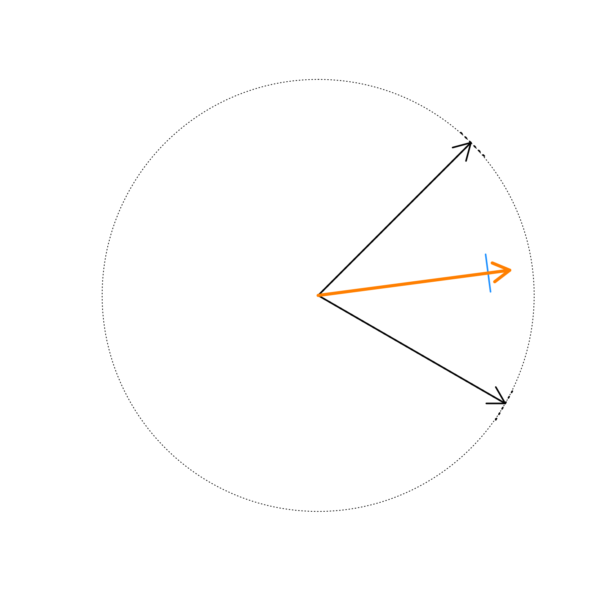

Calculate the mean angle
mean_angle(x, w = NULL, do_plot = FALSE, lens = -5, ...)numeric vector of angles in degrees
numeric vector representing weights
logical indicating whether to create a visual summary plot
numeric value passed to jamba::warpAroundZero() to adjust
the radius
additional arguments are ignored
numeric vector that contains
degree the mean angle in degrees
radius the actual radius based upon mean unit vectors
radius2 the adjusted radius using jamba::warpAroundZero()
This function takes a vector of angles in degrees (0 to 360 degrees) and returns the mean angle based upon the average of unit vectors.
The function also optionally accomodates weighted mean values,
if a vector of weights is supplied as w.
Part of the intent of this function is to be used for color blending
methods, for example taking the average color hue from a vector of
colors. For this purpose, some colors may have varying color saturation
and transparency, which are mapped here as weight w. Colors which are
fully transparent should therefore have weight w=0 so they do not
contribute to the resulting average color hue. Also during color blending
operations, the resulting color saturation is adjusted using the lens
argument, the default lens=-5 has a tendency to increase intermediate
color saturation.
Other colorjam hue warp:
add_colorjam_preset(),
add_colorjam_step(),
adjust_hue_warp(),
approx_degrees(),
colorjam_presets(),
colorjam_steps(),
display_degrees(),
h2hwOptions(),
h2hw(),
hw2h(),
plot_colorjam_preset(),
validate_colorjam_preset()
mean_angle(c(120, 45), do_plot=TRUE);

#> deg radius radius2
#> 82.5000000 0.7933533 0.8944940